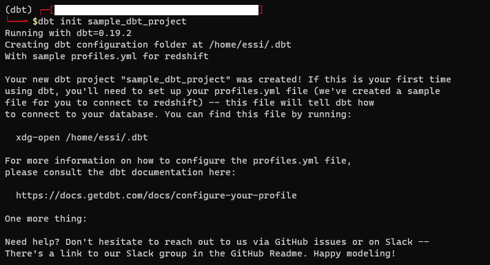
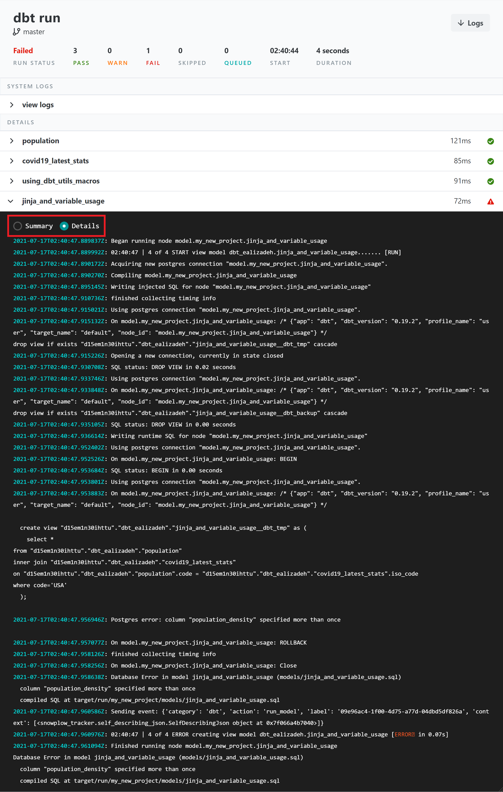
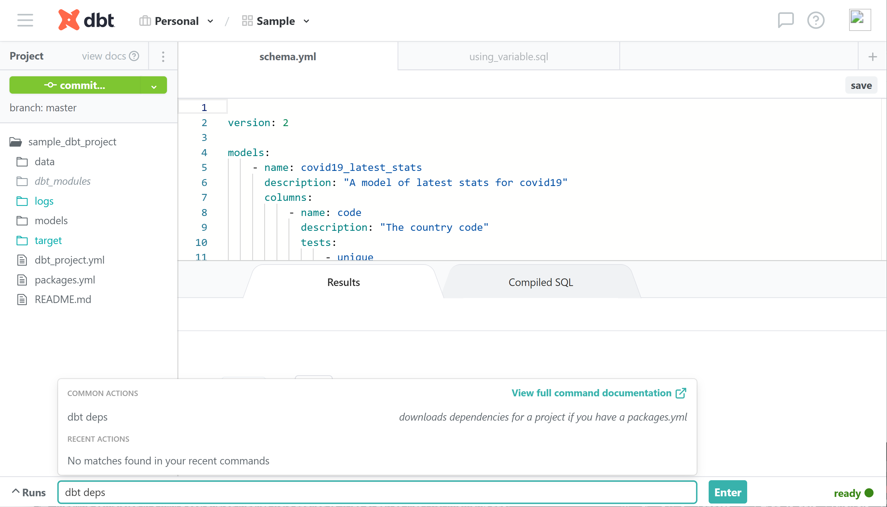
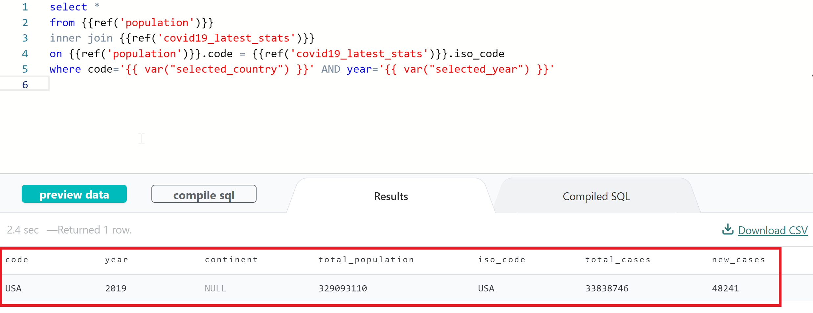
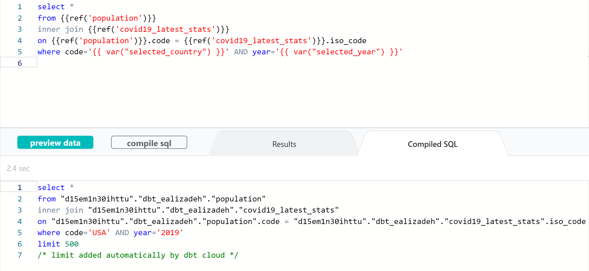
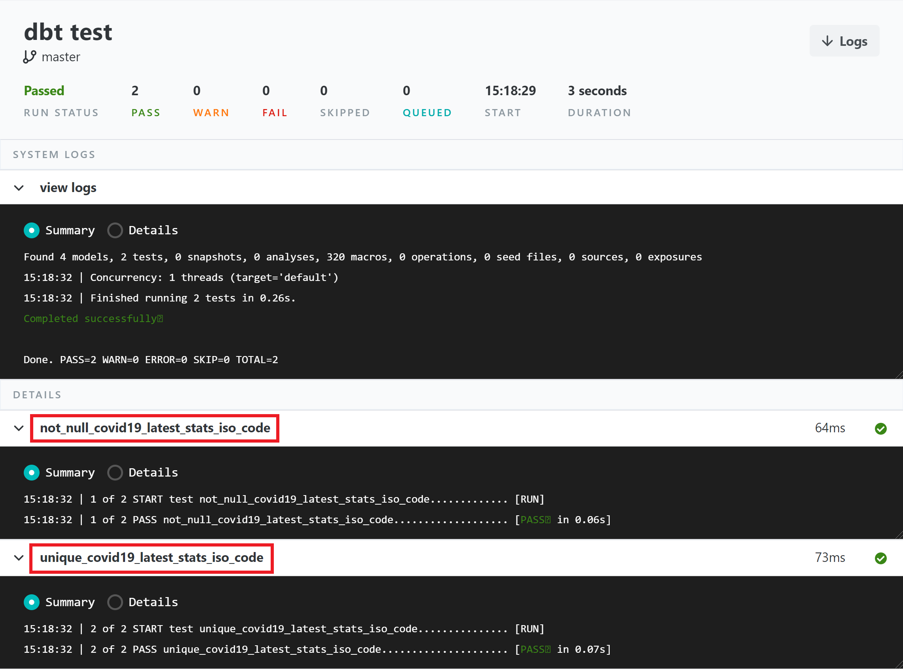
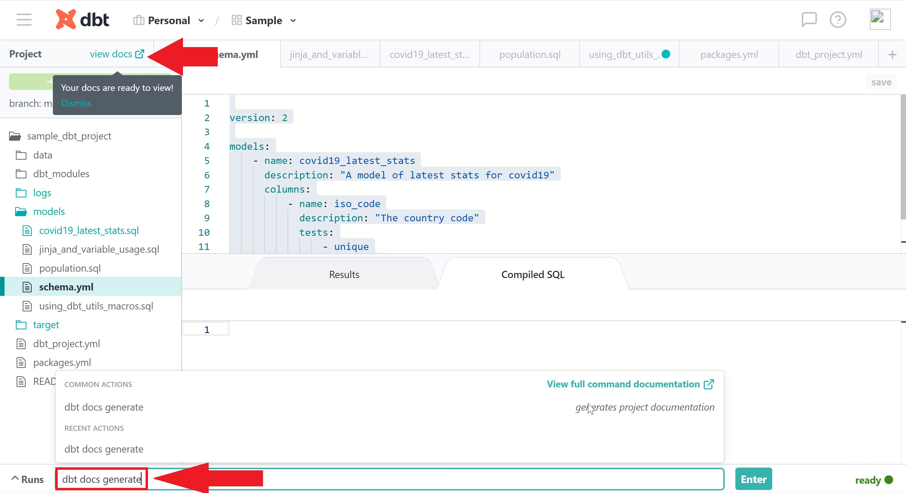

👉 This article is also published on KDnuggets.
Introduction
dbt (data build tool) is a data transformation tool that uses select SQL statements. It allows you to create complex models, use variables and macros (aka functions), run tests, generate documentation, and many more features.
dbt does not extract or load data, but it’s powerful at transforming data that’s already available in the database —dbt does the T in ELT (Extract, Load, Transform) processes.
In this post, you will learn how to …
- Configuring a dbt project
- Creating dbt models (SELECT statements)
- Build complex dbt models using global variables and macros
- Building complex models by referring to other dbt models
- Running tests
- Generating documentation
Pre-requisite
Signup
You can sign up at getdbt.com. The free plan is a great plan for small projects and testing.
Database with populated data
You can check my post on how to deploy a free PostgreSQL database on Heroku. The post provides step-by-step instructions on how to do it.
You can also check the data ingestion script in the GitHub repo accompanying this article.
Following the above, we have generated two tables in a PostgreSQL database that we are going to use in this post. There are two tables in the database, namely covid_latest and population_prosperity. You can find the ingestion script on the GitHub repo for this post.
dbt CLI Installation
You can install the dbt command-line interface (CLI) by following the instructions on the following dbt documentation page.
Basics of a dbt project
There are three main things to know about in order to use the dbt tool.
- dbt project
- database connection
- dbt commands
How to use dbt?
A dbt project is a directory containing .sql and .yml files. The minimum required files are:
- A project file named
dbt_project.yml: This file contains configurations of a dbt project. - Model(s) (
.sqlfiles): A model in dbt is simply a single.sqlfile containing a singleselectstatement.
Every dbt project needs a dbt_project.yml file — this is how dbt knows a directory is a dbt project. It also contains important information that tells dbt how to operate on your project.
You can find more information about dbt projects here.
💡 A dbt model is basically a .sql file with a SELECT statement.
dbt Commands
dbt commands start with dbt and can be executed using one of the following ways:
- dbt Cloud (the command section at the bottom of the dbt Cloud dashboard),
- dbt CLI
Some commands can only be used in dbt CLI like dbt init. Some dbt commands we will use in this post are
dbt init(only in dbt CLI)dbt rundbt testdbt docs generate
dbt Project Setup
Step 1: Initialize a dbt project (sample files) using dbt CLI
You can use [dbt init](https://docs.getdbt.com/reference/commands/init) to generate sample files/folders. In particular, dbt init project_name will create the following:
- a
~/.dbt/profiles.ymlfile if one does not already exist - a new folder called
[project_name] - directories and sample files necessary to get started with dbt
Since dbt init generates a directory namedproject_name, and in order to avoid any conflict, you should not have any existing folder with an identical name.

The result is a directory with the following sample files.
sample_dbt_project
├── README.md
├── analysis
├── data
├── dbt_project.yml
├── macros
├── models
│ └── example
│ ├── my_first_dbt_model.sql
│ ├── my_second_dbt_model.sql
│ └── schema.yml
├── snapshots
└── testsFor this post, we will just consider the minimum files and remove the extra stuff.
sample_dbt_project
├── README.md
├── dbt_project.yml
└── models
├── my_first_dbt_model.sql
├── my_second_dbt_model.sql
└── schema.ymlStep 2: Set Up a Git Repository
You can use an existing repo, as specified during the setup. You can configure the repositories by following the dbt documentation here.
Or, if you want to create a new repo…
you can create a new repository from inside the created directory. You can do that as below
git init
git add .
git commit -m "first commit"
git remote add origing <repo_url>
git push -u origin masterStep 3: Set Up a New Project on dbt Cloud Dashboard
In the previous step, we created a sample dbt project containing sample models and configurations. Now, we want to create a new project and connect our database and repository on the dbt Cloud dashboard.
Before we continue, you should have
- some data already available in a database,
- a repository with the files generated at the previous step
You can follow the steps below to set up a new project in dbt Cloud (keep in mind this step is different than the previous step in that we only generated some sample files).
Set up a new dbt project on dbt Cloud
The dbt_project.yml file for our project is shown below (you can find the complete version in the GitHub repo to this post).
name: 'my_new_project'
version: '1.0.0'
config-version: 2
vars:
selected_country: USA
selected_year: 2019
# This setting configures which "profile" dbt uses for this project.
profile: 'default'
# There are other stuff that are generated automatically when you run `dbt init`dbt Models and Features
dbt models
Let’s create simple dbt models that retrieve few columns of the tables.
select "iso_code", "total_cases", "new_cases" from covid_latestselect "code", "year", "continent", "total_population" from population_prosperityThe dbt model name is the filename of the sql file in the models directory. The model name may differ from the table name in the database. For instance, in above, the dbt model population is the result of a SELECT statement on population_prosperity table in the database.
Run models
You can run all models in your dbt project by executing dbt run. A sample dbt run output is shown below. You can see a summary or detailed log of running all dbt models. This helps a lot to debug any issue you may have in the queries. For instance, you can see a failed model that throws a Postgres error.

Jinja & Macros
dbt uses Jinja templating language, making a dbt project an ideal programming environment for SQL. With Jinja, you can do transformations that are not normally possible in SQL, like using environment variables, or macros — abstract snippets of SQL, which is analogous to functions in most programming languages. Whenever you see a {{ ... }}, you’re already using Jinja. For more information about Jinja and additional Jinja-style functions defined, you can check dbt documentation.
Later in this post, we will cover custom macros defined by dbt.
Using Variables
Define a variable
You can define your variables under the vars section in your dbt_project.yml. For instance, let’s define a variable called selected_country whose default value is USA and another one called selected_year whose default value is 2019.
name: 'my_new_project'
version: '1.0.0'
config-version: 2
vars:
selected_country: USA
selected_year: 2019Use a Variable
You can use variables in your dbt models via [var()](https://docs.getdbt.com/reference/dbt-jinja-functions/var) Jinja function ({{ var("var_key_name") }} .
Macros
There are many useful transformations and useful macros in dbt_utils that can be used in your project. For a list of all available macros, you can check their GitHub repo.
Now, let’s add dbt_utils to our project and install it by following the below steps:
- Add dbt_utils macro to your
packages.ymlfile, as follows:
packages:
- package: dbt-labs/dbt_utils
version: 0.6.6- Run
dbt depsto install the package.

dbt depsComplex dbt models
The models (selects) are usually stacked on top of one another. For building more complex models, you will have to use [ref()](https://docs.getdbt.com/reference/dbt-jinja-functions/ref) macro. ref() is the most important function in dbt as it allows you to refer to other models. For instance, you may have a model (aka SELECT query) that does multiple stuff, and you don’t want to use it in other models. It will be difficult to build a complex model without using macros introduced earlier.
dbt model using ref() and global variables
We can build more complex models using the two dbt models defined earlier in the post. For instance, let’s create a new dbt model that joins the above two tables on the country code and then filters based on selected country and year.
select *
from {{ref('population')}}
inner join {{ref('covid19_latest_stats')}}
on {{ref('population')}}.code = {{ref('covid19_latest_stats')}}.iso_code
where code='{{ var("selected_country") }}' AND year='{{ var("selected_year") }}'Few points about the query above:
{{ref('dbt_model_name')}}is used to refer to dbt models available in the project.- You can get a column from the model like
{{ref('dbt_model_name')}}.column_name. - You can use variables defined in
dbt_project.ymlfile by{{var("variable_name)}}.
The abbove code snippet joins the data from population and covid19_latest_stats models on the country code and filters them based on the selected_country=USA and selected_year=2019. The output of the model is shown below.

You can also see the compiled SQL code snippet by clicking on compile sql button. This is very useful particularly if you want to run the query outside the dbt tool.

dbt model using dbt_utils package and macros
dbt_utils package contains macros (aka functions) you can use in your dbt projects. A list of all macros is available on dbt_utils’ GitHub page.
Let’s use dbt_utils [pivot()](https://github.com/dbt-labs/dbt-utils/#pivot-source) and [get_column_values()](https://github.com/dbt-labs/dbt-utils/#get_column_values-source) macros in a dbt model as below:
select
continent,
{{ dbt_utils.pivot(
"population.year",
dbt_utils.get_column_values(ref('population'), "year")
) }}
from {{ ref('population') }}
group by continentThe above dbt model will compile to the following SQL query in dbt.
select
continent,
sum(case when population.year = '2015' then 1 else 0 end) as "2015",
sum(case when population.year = '2017' then 1 else 0 end) as "2017",
sum(case when population.year = '2017' then 1 else 0 end) as "2016",
sum(case when population.year = '2017' then 1 else 0 end) as "2018",
sum(case when population.year = '2017' then 1 else 0 end) as "2019"
from "d15em1n30ihttu"."dbt_ealizadeh"."population"
group by continent
limit 500
/* limit added automatically by dbt cloud */Run Tests in dbt
Another benefit of using dbt is the ability to test your data. Out of the box, dbt have the following generic tests: unique, not_null, accepted_values and relationships. An example of these tests on the model is shown below:
version: 2
models:
- name: covid19_latest_stats
description: "A model of latest stats for covid19"
columns:
- name: iso_code
description: "The country code"
tests:
- unique
- not_nullYou can run the tests via dbt test. You can see the output below

For more information on testing in dbt, you can visit dbt documentation.
Generate Documentation in dbt
You can generate documentation for your dbt project by simply running dbt docs generate in the command section as shown below:

You can browse through the generated documentation by clicking on view docs. You can see an overview of the generated docs below.
In addition to dbt docs generate, dbt docs can also serve a webserver with the generated documentation. To do so, you need to simply run dbt docs serve. More information about generating docs for your dbt project is available here.
Other Features
Database administration using Hooks & Operations
There are database management tasks that require running additional SQL queries, such as:
- Create user-defined functions
- Grant privileges on a table
- and many more
dbt has two interfaces (hooks and operations) for executing these tasks and importantly version control them. Hooks and operations are briefly introduced here. For more info, you can check dbt documentation.
Hooks
Hooks are simply SQL snippets that are executed at different times. Hooks are defined in the dbt_project.yml file. Different hooks are:
pre-hook: executed before a model is builtpost-hook: executed after a model is builton-run-start: executed at the start ofdbt runon-run-end: executed at the end ofdbt run
Operations
Operations are a convenient way to invoke a macro without running a model. Operations are triggered using [dbt run-operation](https://docs.getdbt.com/reference/commands/run-operation) command.
Note that, unlike hooks, you need to explicitly execute the SQL in a dbt operation.
Conclusion
dbt is a nice tool that is definitely worth giving a try as it may simplify your data ELT(or ETL) pipeline. In this post, we learned how to set up and use dbt for data transformation. I walked you through the different features of this tool. In particular, I provided a step-by-step guide on
- Configuring a dbt project
- Creating dbt models (SELECT statements)
- Build complex dbt models using global variables and macros
- Building complex models by referring to other dbt models
- Running tests
- Generating documentation
You can find the GitHub repo containing all scripts (including the data ingestion script) below. Feel free to fork the source code of this article.
Useful Links
Step-by-Step Deployment of a Free PostgreSQL Database And Data Ingestion
References
Citation
@online{alizadeh2021,
author = {Esmaeil Alizadeh},
title = {Dbt for {Data} {Transformation} - {A} {Hands-on} {Tutorial}},
date = {2021-06-18},
url = {https://new.ealizadeh.com/blog/dbt-tutorial},
langid = {en}
}